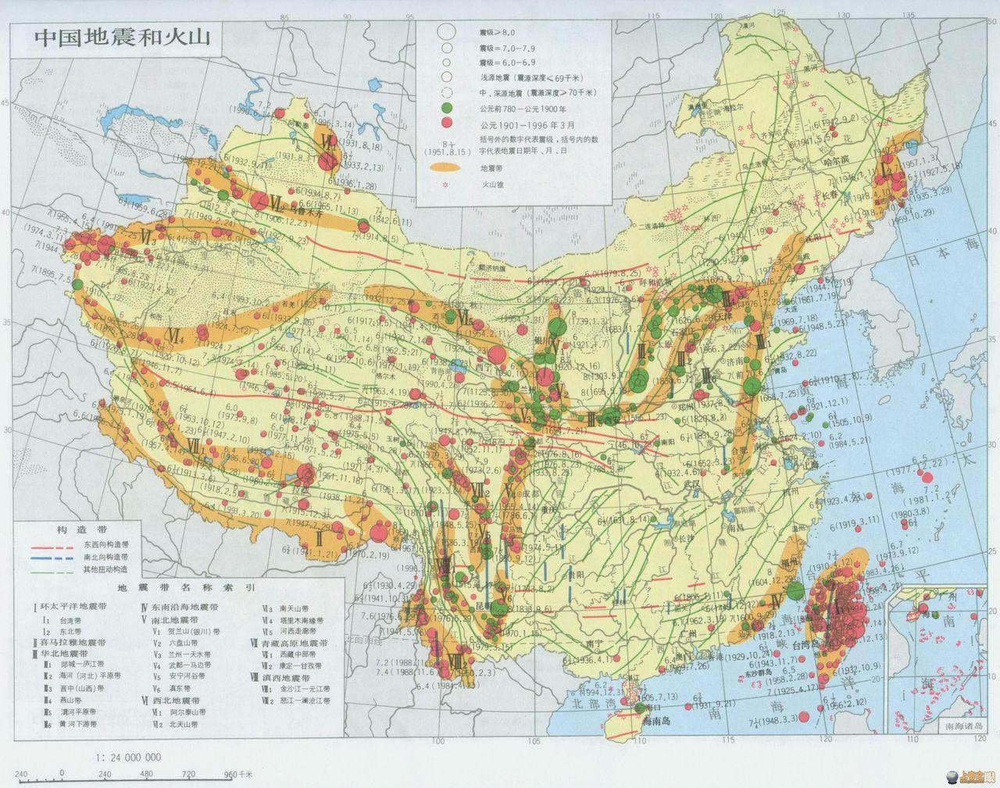
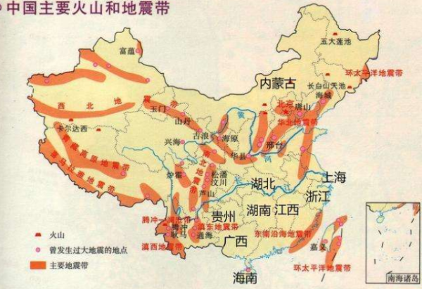

An earthquake is the result of the Earth's movements. As the Earth moves, the crust undergoes continuous changes. The gradual accumulation of enormous energy from the Earth's movements exerts a strong force on the underground rocks. When rocks cannot withstand this force, they suddenly rupture and shift, causing the release of energy on the Earth's surface, resulting in ground vibrations—this is an earthquake.
Earthquakes come in various types. There are three main types of natural earthquakes: volcanic earthquakes, collapse earthquakes, and tectonic earthquakes. Volcanic earthquakes occur due to volcanic eruptions, causing ground vibrations from the impact of magma on the surface. The impact range of volcanic earthquakes is relatively small, resulting in relatively minor damage. Collapse earthquakes are caused by subsidence of geological layers, such as the collapse of underground limestone caves or subsidence in mining areas. These earthquakes generally cause limited ground vibrations and minimal damage. The earthquakes we commonly refer to are tectonic earthquakes. Tectonic earthquakes are caused by the movement and rupture of rock layers deep underground. This type of earthquake accounts for over 90% of global earthquakes, has significant vibration intensity, a wide impact range, and poses the greatest threat to humans.
Earthquakes vary in magnitude. The magnitude of an earthquake is expressed in seismic magnitude, where a higher magnitude indicates a stronger earthquake. Earthquakes can be classified based on magnitude into the following categories: weak earthquakes, felt earthquakes, destructive earthquakes, and severe destructive earthquakes. Weak earthquakes generally refer to earthquakes below magnitude 3, which people usually do not feel, and only instruments can record them. Felt earthquakes typically range from magnitude 3 to below magnitude 5, and people can feel them, but they generally do not cause significant damage. Globally, there are approximately over 50,000 earthquakes with a magnitude above 3 each year. Destructive earthquakes usually refer to earthquakes with a magnitude above 5 that can cause damage to the Earth's surface and structures. On average, there are about 1,000 earthquakes with a magnitude above 5 globally each year. Severe destructive earthquakes refer to earthquakes with a magnitude above 7. Such earthquakes occur globally about 10 to 20 times a year, with most happening in remote, uninhabited areas. With each increase in magnitude level, the energy released multiplies by more than 30 times, meaning a magnitude 7 earthquake is equivalent to the energy of nearly 1000 magnitude 5 earthquakes.
During an earthquake, seismic waves are generated, and the perceived vibration is caused by the propagation of these seismic waves.
During an earthquake, people often feel vertical and horizontal movements. This is due to the characteristics of seismic waves, which mainly consist of longitudinal waves and transverse waves. Longitudinal waves propagate quickly but are relatively weak, causing a sensation of up-and-down motion. Transverse waves propagate slightly slower but are stronger, causing significant shaking and severe damage to surface structures. The degree of earthquake damage is related not only to the magnitude but also to factors such as the depth of the earthquake source, the distance from the epicenter, and the propagation of seismic waves. The intensity of an earthquake, measuring its degree of destruction, is expressed using seismic intensity. Generally, after an earthquake occurs, the area around the epicenter experiences the most severe damage and highest intensity. The intensity gradually decreases as it spreads outward from the epicenter. There is only one magnitude for an earthquake, but different intensity zones can be delineated.
During an earthquake, the location where the earthquake originates within the Earth is called the seismic source. The point directly above the seismic source on the ground is called the epicenter. The distance from the seismic source to the epicenter is called the seismic source depth. The distance from any point on the Earth's surface to the epicenter is called the epicentral distance. Earthquake distribution on Earth is not uniform. Looking at the global distribution map of earthquake epicenters, we can see that seismic activity follows certain patterns, primarily occurring in earthquake belts, including the Pacific Ring of Fire, the Eurasian seismic belt, and the Mid-Atlantic Ridge seismic belt. China, located in the southeastern part of Eurasia and adjacent to the Pacific Ocean, is a country with a high risk of earthquake disasters. By examining the distribution map of major seismic belts in China, we can see that there are more than 20 major seismic belts nationwide.
Phenomena in nature that are related to impending earthquakes are referred to as earthquake precursors. Earthquake precursors include microscopic anomalies and macroscopic anomalies. Microscopic anomalies include changes in topography and electromagnetic anomalies, mainly detected by high-precision scientific instruments. Macroscopic anomalies refer to perceptible anomalies, including underground water anomalies, anomalies in plants and animals, and anomalies in ground sounds and lights. Macroscopic precursors include changes in well water during dry spells—well water suddenly dries up or rises unexpectedly, abnormal changes in water quality, and unpleasant odors. When there are observable changes such as bubbling, turbidity, or odors in underground water, it may indicate an impending earthquake. Of course, many factors can cause changes in underground water, and changes may also be influenced by other environmental factors.